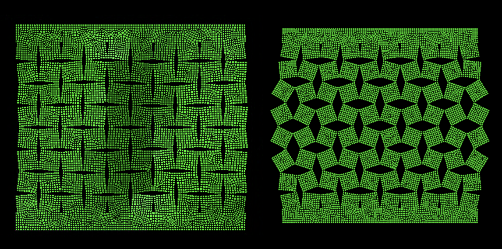
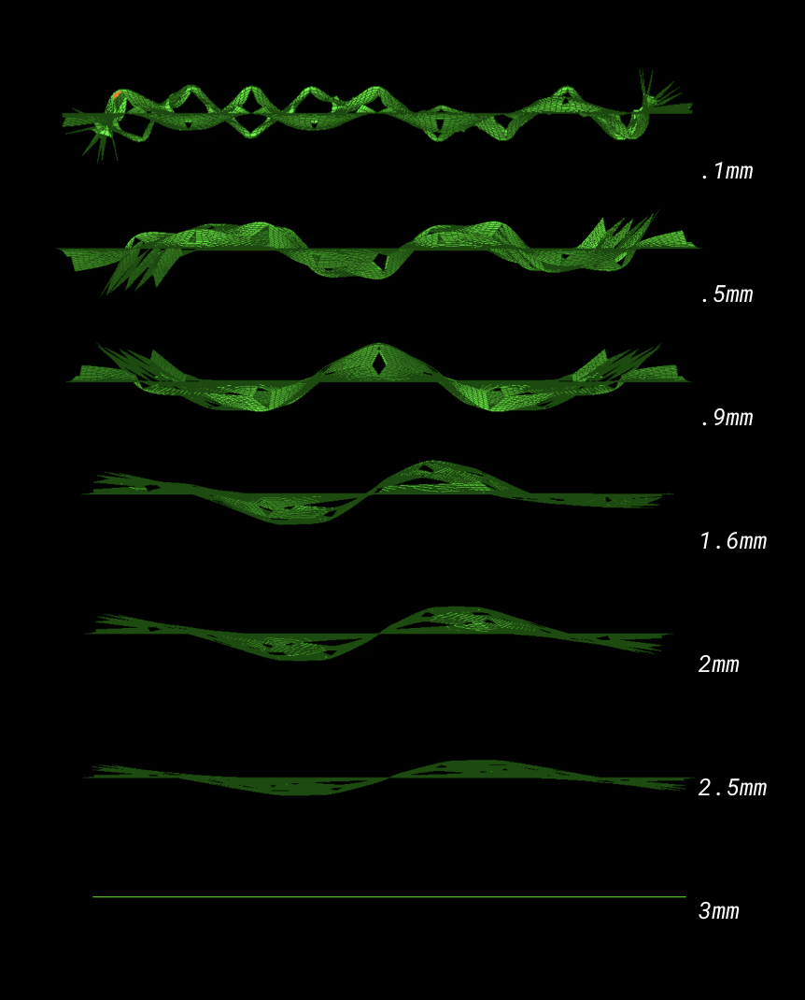

Kirigami
Simulating the out of plane deformation of kirigami cuts in Abaqus. Looking at how deformation varies as angle of cut and thickness of material changes. Used a buckling analysis involving finding the eigenmode.

Stress during deformation

First buckling mode vs load applied

Different thicknesses